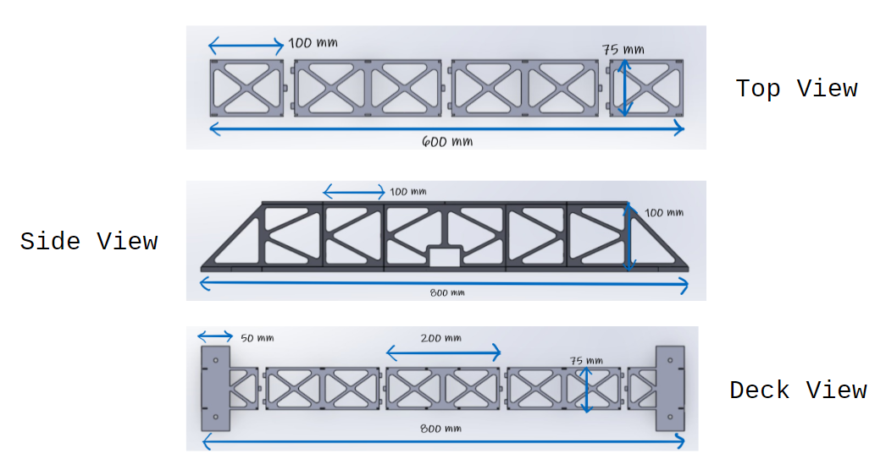

I was selected to represent my high school in the NJIT 3D Printed Bridge Competition. The goal of the competition was to design an aesthetically-pleasing, lightweight, and stiff bridge that will take the least amount of print time and assembly time.

Different views
of designed bridge